Improving the usability of a powerful mobile app for musicians.
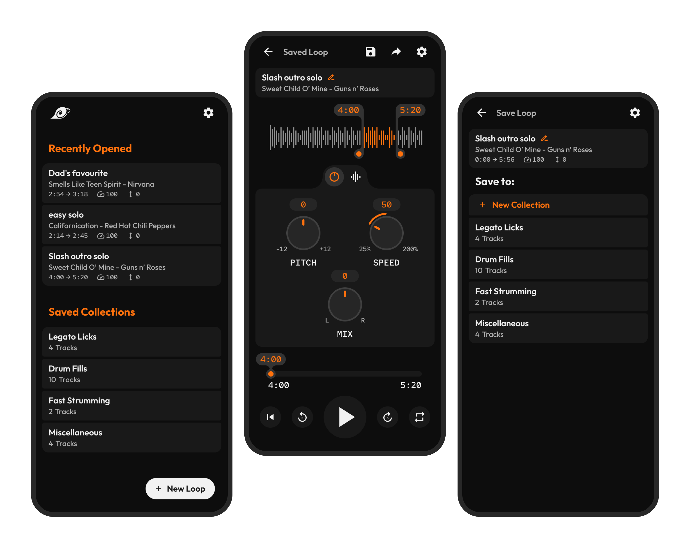What is Amazing Slow Downer
Musicians learn and practice through repetition. They focus on specific sections of a track by slowing it down and listening to it over and over again. Amazing Slow Downer is an app that does just that. Roni music, an indie developer released the app back in 2013, making the functionality of his PC program much more accessible than before.
The app's interface presented a steep learning curve, resulting in a significant usability challenge for its users.
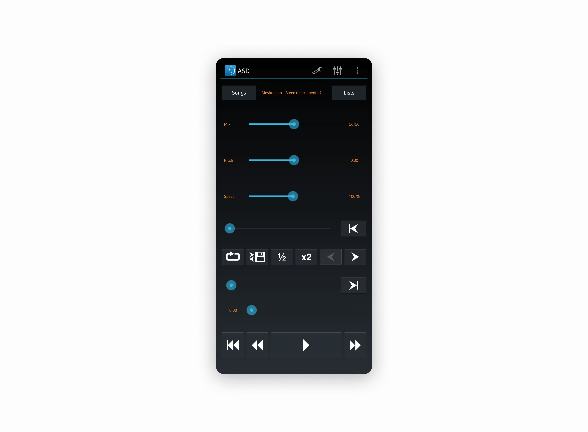
Fig 1
Current UI of the Amazing Slow Downer android app
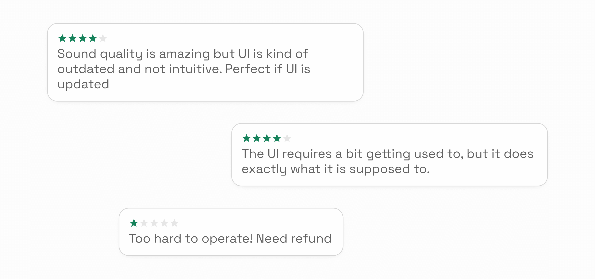
Fig 1
Sampled reviews from the app's play store page
Heuristic Evaluation
The design of key UI elements within the main interface triggers a range of usability challenges as highlighted below
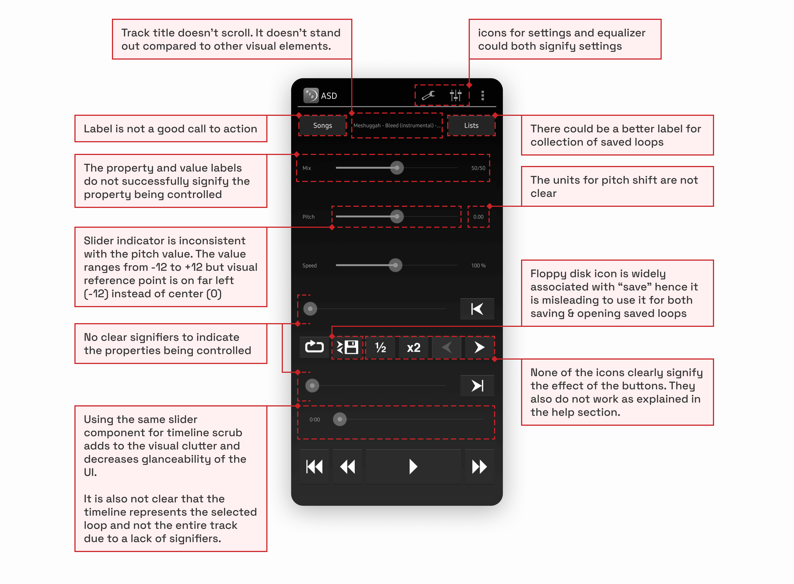
Fig 2
The app's current UI with annotations for usability issues identified through heuristic evaluation
The Operation Manual
The app's extensive operation manual is also an indicator of the app's usability challenges.
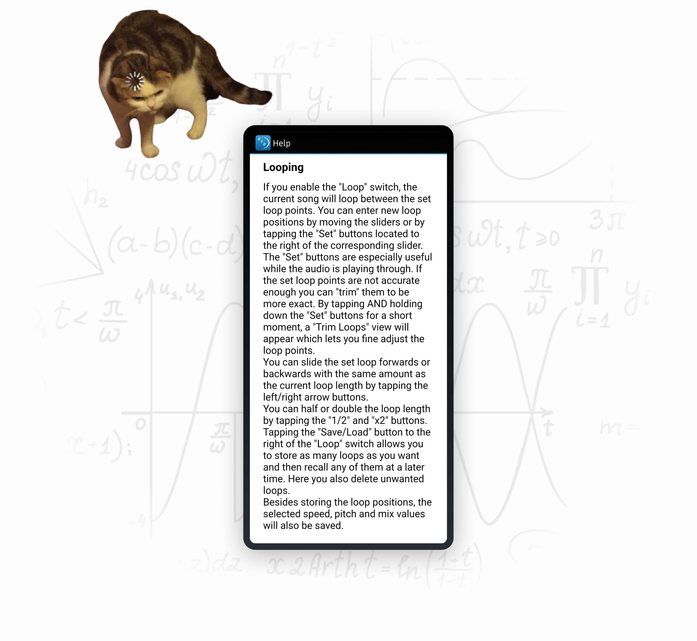
Fig 3
Screenshot of the app's official user manual
Task flow analysis — Creating and playing a loop
The position and layout of different interactive elements didn’t align with order of steps in the task flow. The user therefore doesn’t receive any indication or guidance on how to achieve their goal. This results in increased cognitive load because they not only have to make sense of the interface, but also have to figure out the different steps required and the order in which they have to be performed.
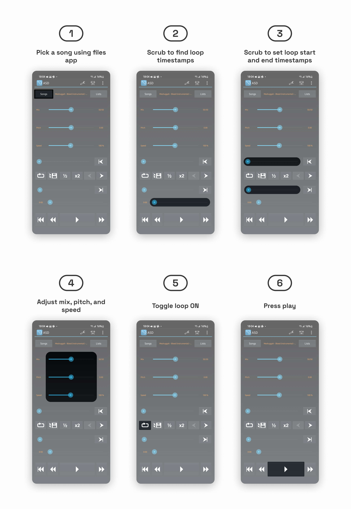
Fig 4
Steps required to create a loop using the app's current interface
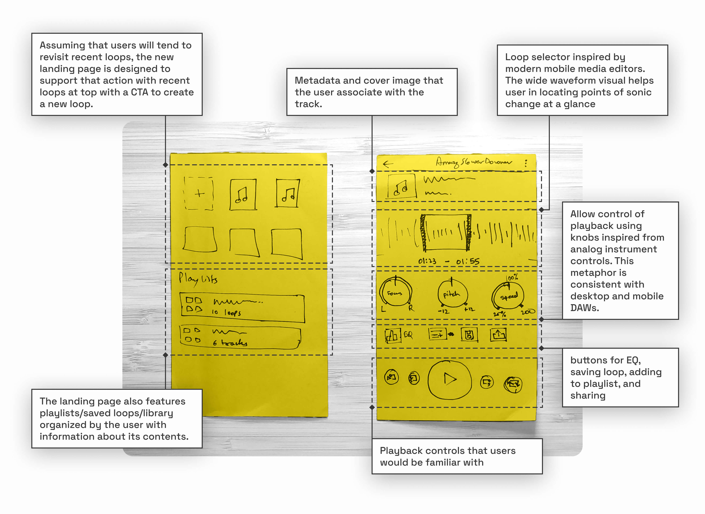
Fig 4
Lo-fi wireframe for the redesign with annotations for the new interaction elements
Task Flow Analysis — Accessing Saved Loops
Users create new loops when practicing a new track, but more often than that, they want effortless access to previously created loops. The new app flow allows the user to save loops into named “collections” to improve findability. The user can create new collections to best fit their own categorization models. As per the redesigned IA, the user lands on a new home where they are presented with “Recently Opened” loops and their “Saved Collections.”
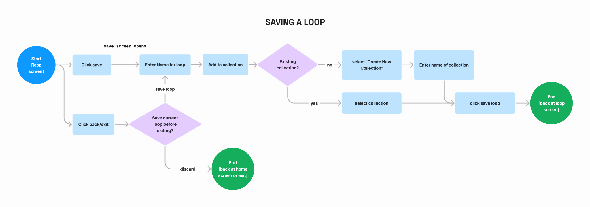
Fig 5
Re-imagined task flow for saving a loop
Task Flow analysis — Saving Loops
There were 3 separate but very similar actions to save or share a created loop. There was opportunity to refine them based on the intended outcome.
Modern mobile operating systems handle sharing and exporting files to external applications using the same system dialog, therefore, I chose to merge those paths.
Modern mobile operating systems handle sharing and exporting files to external applications using the same system dialog, therefore, I chose to merge those paths.
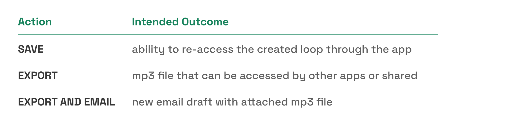
Fig 6
Different possible actions in the app's current design to save a loop
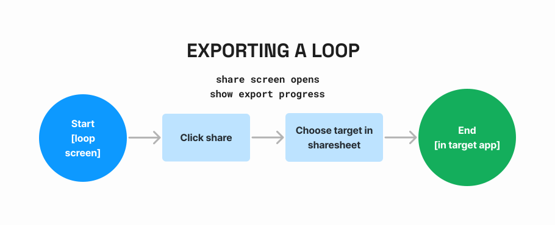
Fig 6
Re-imagined task flow for exporting a loop
Testing, Iterating, and Visualizing
The mid-fi prototype served multiple purposes. It allowed me to conduct guerrilla usability tests using think-aloud protocol, mainly with a novice musician as the sole participant. In addition to usability, I used it for ergonomic testing, ensuring that frequently used interactive elements were comfortably accessible and that small target areas offered appropriate feedback. Moreover, it served as a foundation for planning essential components, various states, and dialogue prompts.
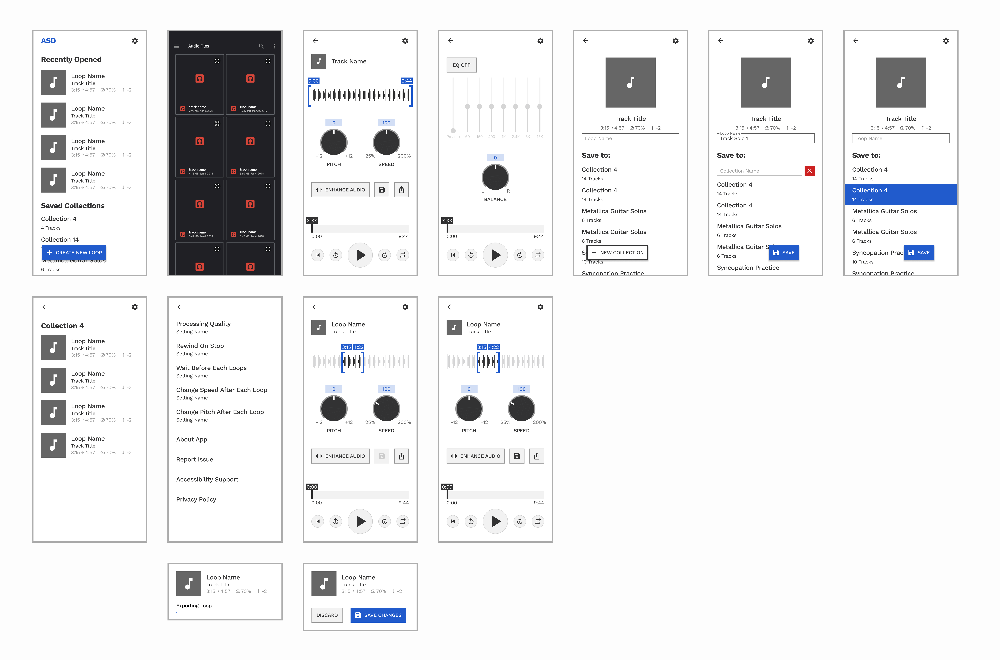
Fig 6
Mid-fi wireframes of the app's redesign
Crafting The App's Visual Identity
Creative Inspiration
In shaping the app's visual identity, my vision was to strike a harmonious balance between skeuomorphic and surreal elements. My goal was to recreate the tactile and responsive qualities of physical instruments and control interfaces, which musicians are intimately familiar with, while harnessing the creative freedom that the digital medium affords.To clarify this vision, I put together a mood board that guided me throughout the visual design process. Below, you can take a look at a snippet of the mood board I used to refine my design direction.
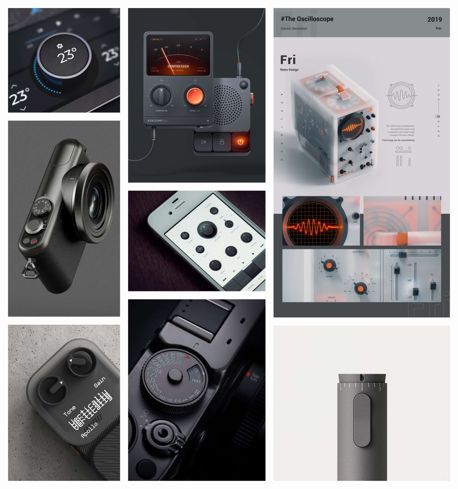
Fig 7
Sample of the moodboard created for the redesign's visual direction
Intentional design choices for a clear, cohesive, and evocative experience
Orange was deliberately chosen as the primary color for its energy and its representation of creativity. These qualities are closely associated with the core themes of repetitive practice and music. Moreover, the use of orange imparts a retro vibe to the interface, infusing a sense of nostalgia and playfulness. I also made use of Figma’s variable to create a well defined system of design tokens for color styles. This helps separate colors by both their numerical value and use-case while referencing a single source of truth to maintain consistency.
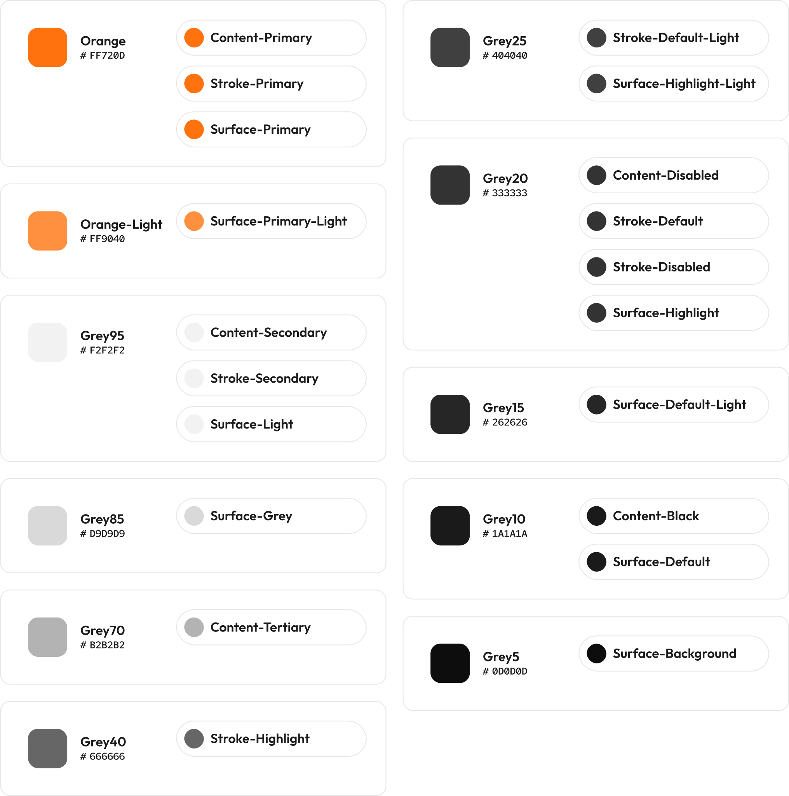
Fig 9
Color tokens used in the app's redesign
The most challenging (and fun!) part was designing new interactive elements and designing them well.
Interaction details matter
In this app, user actions are more complex compared to typical mobile apps. This makes purposeful design decisions even more crucial. I improved upon the unique interactive features tested in the mid-fi prototype and made them highly intuitive, particularly the loop selector. I also made use of subtle design elements that significantly enhance the user experience. For example, confirmation modals ensure users don't lose their progress, while micro interactions boost user confidence in their actions.

Fig 12
Anatomy of the loop selector UI element
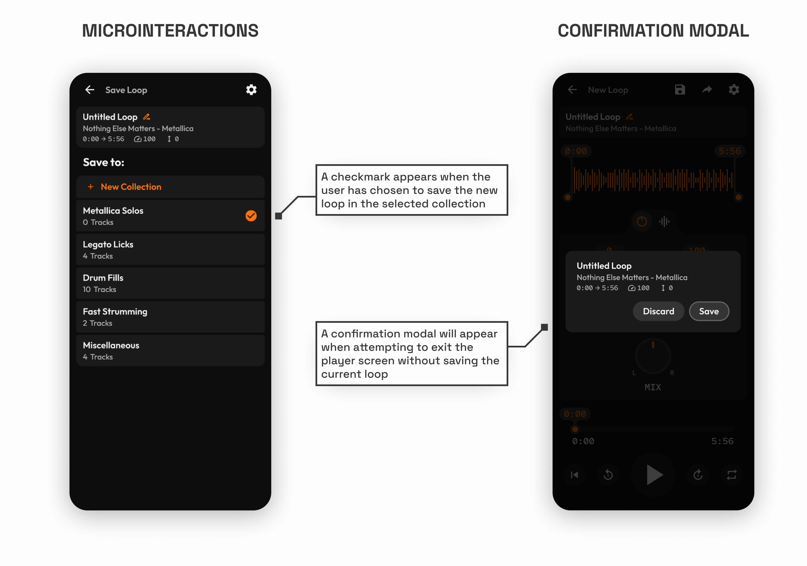
Fig 12
Examples of minor interaction details in the UI
Challenges and Successes of Prototyping with Figma Variables
The use of Figma variables significantly helped reduce the number of screens in the final prototype. However, since the feature is still in beta, I did encounter a few challenges while using it for the prototype. One of the primary frustrations was the inability to link component properties to variables. It was also quite laborious to keep track of variable changes through interactions and equally laborious to update them. Nevertheless, clever use of variables did enable me to simulate the envisioned functionality much more closely than before.
That loop selector handle sort of looks like a shell...a snail shell...ooo...a snail is also slow, but what if it was fast! Wait has that already been done? Ah turbo was a thing...but anyways...
— Me
Logo Design
That’s how I started thinking about the logo for this app. In the beginning I wanted the similarities between the snail in the logo and the UI elements to be quite apparent, but after escaping that tunnel vision and building upon the idea, the final logo was created.
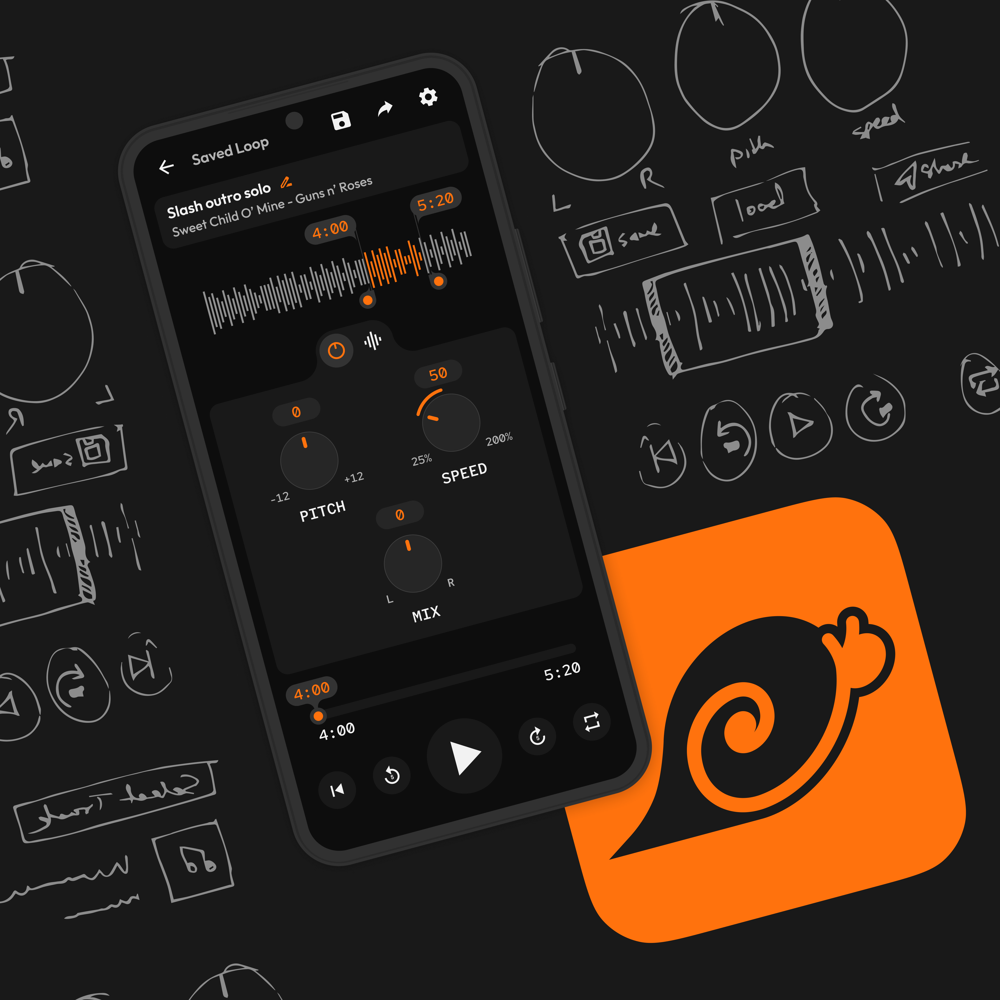
Fig 12
Mockups of the final app redesign and the logo